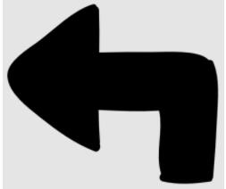

為圖片替換文本；把圖象作爲鏈接
<!DOCTYPE html>
<html>
    <a href="https://www.w3school.com.cn">現在開始學html</a>
    
    <p> 
        <image src="http://img1.imgtn.bdimg.com/it/u=4084155909,4089166316&fm=26&gp=0.jpg"  width = "888"  height= "428"/></image>
    </p>

    <p>
        
        
    </p>

    <body>
        <br> <br> <br> <br> <br>
        <br>
        <hr>
        <p>有些瀏覽器只顯示文本，僅僅能夠顯示在圖像的"alt"屬性中指定的文本。這裏，"alt"中的文本是“向左轉”</p>
       
        
        <p>儅沒法顯示圖像時，將顯示“alt”屬性中的文本</p>

        

        <p>你也可以用圖像作爲鏈接
            <a href = "https://www.w3school.com.cn">
            
            </a>
        </p>
    </body>

  

   
</html>